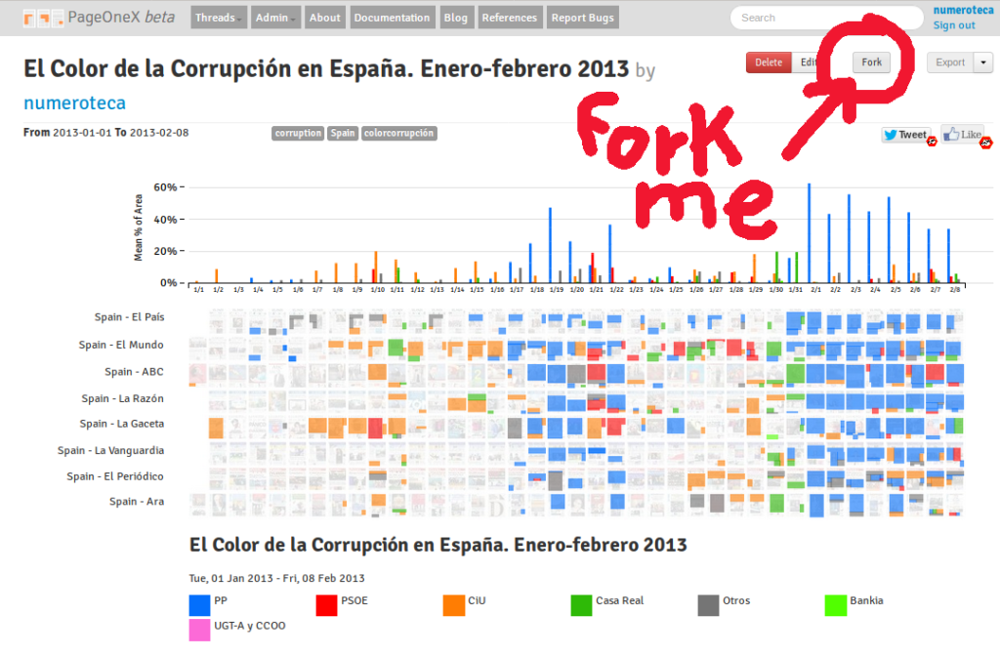
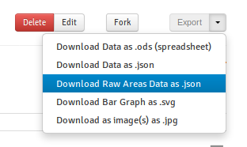
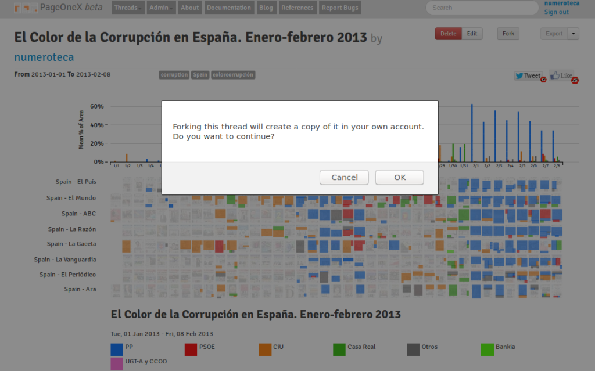
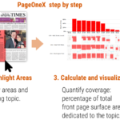

We’ve developed an R script to process Pageonex JSON raw area export files and regenerate charts and calculations joining different datasets. Check for more information in the repository.
{kind=link}
Brand new features: edit areas, fork threads, multi taxonomy!

After a while we are glad to announce brand new features in PageOneX.
We developed these features last summer, but until now they have not been available in the hosted version at pageonex.com. We worked with Juanjo Bazán (@xuanxu) in this.
Export a thread in raw format

Rebuilding the thread in R it is now possible. It also works for multiple newspapers. Here a cleaner version. Compare it with the thread in @PageOneX website. You can do it downloading Raw Areas Data json. R code available: https://t.co/4bVMRMbRws pic.twitter.com/gQXBhR2T1Y
— numeroteca (@numeroteca) May 10, 2019
Until now you could export the percentage of coverage per day and paper in json and spreadsheet, now there is an extra feature that allows you to export the raw data: the extact location of every area and all its classifications (read following feature). We are starting a new project pageonexR that allows you to import your threads to R and analyse their data.
Classify by multiple taxonomies
This new feature would add the capability to add extra information to drawn areas. A highlighted area could have multiple taxonomies and open fields.
Until this new release you could only classify each area with one taxonomy. For example, an area could be categorized as “International coveragae” but not as “International coverage” AND “Nigeria” AND “positive framing”. Now you can do it . This feature is only available for certain users. If you want to use it write a comment to this post. We are studying how to make this available for all the users.
Fork a thread

Another cool feature is that you can fork a thread in @pageonex.
If you see a thread that you like you can clone it and work on it! pic.twitter.com/BxsH9wq6Ub— numeroteca (@numeroteca) May 10, 2019
You like another’s user thread: you can clone and edit it.
Edit and remove areas
Something basic that is now possible is to edit and delete areas in https://t.co/TSwWbvktjk. Very useful for everyone, specially for heavy users. Before you have to delete all the areas in a day to edit the category of one! @PageOneX pic.twitter.com/PosXAwteTl
— numeroteca (@numeroteca) May 10, 2019
Before you had to erase all the areas in a front page to remove one. Now you can remove them separately and re-classify them.
Another great thing is the new containerized versions of PageOneX. Rafa Porres (@walter_burns) developed it and Rahul Bhargava (@rahulbot) deployed it at Civic media server. Thanks for your support!!
Containeraized versions, make your own deployment
Pageonex is an open-source project. Thanks to Rafa Porres (@walter_burns) we have PageOneX ready to use in a docker container. In fact, the new containerized version is what we are using now in the production version at pageonex.com. If you don’t want to use the hosted version of pageonex at http://pageonex.com you have a few options to run it yourself. Read our documentation and choose the best option for you. We hope this helps other developers help extending the features of PageOneX.
- You can run pageonex locally using docker-compose and our generated images. This is the easiest way.
- You can run pageonex locally using docker-compose and building locally the docker images. This is recommended if you want to do some development.
- You can install pageonex locally compiling in your system all the needed files. This option is more advanced and it is only recommended if you’re doing heavy development.
- You can use our Docker images to deploy pageonex against your mysql database. This is an advanced setup that it is useful if you’re planning to maintain your own pageonex production environment.
We didn’t get the grant to develop new features but… look how cool they are!

Last January we presented PageOneX to SAGE Concept Grant Application to help us develop some new features. We didn’t get the money, but we thought it would be cool anyway to share with you the proposal. Thanks to Sam Zhang and Fernando Blatt that help us build this proposal.
If you want to help us make a better PageOneX we are now starting a new round of development, a reduced version of all the things that we had originally planned. Join the dev email list and check our road map for the following month.
We are starting to work with @xuanxu to develop new features (and fix some stuff too) for @PageOneX. Saty tuned! #rubyonrails
cc @ahmdrefat @schock @rahulbot @elplatt @montera34 pic.twitter.com/cZCbeGeYd8— numeroteca (@numeroteca) July 2, 2018
This was the original proposal:
PageOneX. Visualize attention on newspaper front pages.
Pitch
What it is and the problem it is looking to solve (150 word limit)
PageOneX is a Free Software tool that we designed to simplify the coding, analysis, and visualization of front page newspaper stories and media events. Even as the media ecology has been rapidly transformed by the rise of broadband Internet, mobile phones, and social media, daily print newspapers continue to be a key mechanism for organizing both public and elite attention. Communication scholars have long used column-inches or number of articles of print newspaper coverage as an important indicator of mass media attention. It involved obtaining physical copies of newspapers, coding and measurement by hand, input data into a spreadsheet. PageOneX automates and dramatically simplifies this methodology to enable researchers and media-interested public alike to analyse news coverage with an online tool.
We plan to develop new features to make PageOneX a more robust research tool:
- intercoder reliability
- text-based search (OCR and PDF text extraction)
- cross-platform comparison
Solution
Detailed outline of the product of prototype you are looking to build including visuals (300 word limit)

The PageOneX prototype is up and running, with 1.000+ users. Currently users can easily choose among 700+ newspapers, select a time frame, and highlight parts of newspaper front pages that feature a topic of interest (read our academic article about the tool). PageOneX automatically calculates the area dedicated to a particular topic, automating the process and making it broadly accessible online.
The tool has been used to produce visualizations for multiple peer-reviewed publications (examples at blog.pageonex.com/references).

We plan to develop new features to make PageOneX a more robust research tool. Top priority features include:
Intercoder Reliability.
Allow multiple coders to analyse the same set of front pages according to shared coding instructions, without seeing the codes applied by others, then compare values between coders to obtain a statistically valid intercoder reliability measure.
Text-based Search.
No text-based search of newspaper front page content is currently possible. We have identified several possible paths to solve this issue that will enable to analyse data at bigger scale and speed:
- Optical character recognition (OCR),
- Access third-party database of full text newspaper articles such as Lexis-Nexis or MediaCloud,
- Automatic identification of text blocks and layout structure in PDFs.
We are planning to use and base the development in Hadjar, Rigamonti, Lalanne, and Ingold (2004) and a working prototype by Sam Zhang using the Newseum’s database. See: Hadjar, K., Rigamonti, M., Lalanne, D., & Ingold, R. (2004). Xed: A new tool for extracting hidden structures from electronic documents. Proceedings of the First International Workshop on Document Image Analysis for Libraries (212–224). Retrieved from https://diuf.unifr.ch/people/lalanned/Articles/XedDIAL04.pdf
Cross-platform Comparison.

Build comprehensive cross-platform capabilities to produce analysis of media attention, and add statistical analysis of these relationships [For example, Graeff, Stempeck, and Zuckerman (2014) analysed the evolution of a story by using PageOneX alongside other metrics including Twitter updates, Google Search, bit.ly clicks, and more (link)] . We plan to integrate different sources via APIs that increasingly provide access to data: video or audio news broadcasts transcripts, closed captions (Archive.org’s archive of TV news), amount of news (MediaCloud.org) and Twitter.
Diversify Sources of Front Pages.
Currently PageOneX only uses front pages from a single source (kiosko.net). Enabling multiple sources would allow to expand its use.
Additional Feature Requests from Current Users.
Prioritizing outstanding feature requests.
Who wrote the news? News classified by author’s gender.
Website: is there a website associated with the project?
http://pageonex.com/
Competition
What else is out there and why it doesn’t fit the need (200 word limit)
There is no competitor software in the field. Scholars and data journalists who do this kind of analysis of attention on newspaper front pages either use PageOneX, or do manual data collection, coding, and visualization.
In Summer 2014 PageOneX won the 2014 APSA-ITP (American Political Science Association-information technology and politics) award for Best Software.
Schedule
High level outline of your plan for development and who will be working on the product prototype (100 character limit)
April 2018
Set up communication infrastructures, development environment and protocols.
Survey to existing users. Analyse and rank requests.
Update dependencies.
May-July 2018
Intercoder Reliability (IR): development.
Text-based search (TbS): prototype.
Diversify Sources of Front Pages: development and testing.
August-October 2018
TbS: development.
IR: testing.
Cross-platform Comparison (CpC): prototype.
Users’ feature requests: development
November 2018-December 2018
TbS: testing.
CpC: development.
January-February 2019
CpC: testing.
General UX Testing. Bug fixing.
March 2019
Write grant report.
Communication.
Peer reviewed paper about PageOneX published
The paper Sasha and I have been working on for quite a long time has just been published at the International Journal of Communication PageOneX: New Approaches to Newspaper Front Page Analysis. We hope it provides an useful guide and resource to the field of the newspapers front page analysis.
PageOneX: New Approaches to Newspaper Front Page Analysis
Sasha Costanza-Chock, Pablo Rey-Mazón
Abstract
PageOneX is a Free/Libre and Open Source Software tool that we designed to aid in the coding, analysis, and visualization of newspaper front pages. Communication scholars have long analyzed newspaper front pages, using column inches as an important indicator of mass media attention. In the past, this involved obtaining physical copies of newspapers, coding and measurement by hand, and manual input of measurements into a spreadsheet or database, followed by calculation, analysis, and visualization. PageOneX automates some of these steps, simplifies others, and makes it possible for teams of investigators to conduct shared newspaper front page analysis online. We review scholarship in this area, describe our approach in depth, provide concrete examples of analysis conducted by media scholars using PageOneX, and discuss future directions for research and development.
Number of PageOneX.com users keeps growing

This is a first approach to study the use of PageOneX.com. The number of users is a way of measuring interaction with the site. It does not mean that all users create threads or code front pages. Why are people signing up t othe site and
I should look in the periods of higher increase of subscriptions (almost vertical lines) and add that information to the graphic.